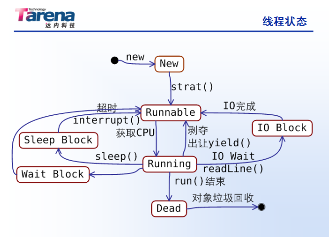

几乎每种操作系统都支持进程的概念----进程是在某种程度上相互隔离的、独立运行的程序。一般来说，这些操作系统都支持多进程操作。而多线程扩展了多进程操作的概念，讲任务的划分下降到了程序级别，使得各个程序似乎可以在同一个时间内执行多个任务。每个任务称为一个线程，能够同时运行多个线程的程序称为多线程程序。下面，针对多线程进行一下简要的分析。
1. 解释
2. 举例说明
所以A想让B请他吃饭就用同步，如果A请B吃饭就用异步，此时可能B来的慢，A吃完走了，这样可以省钱
再举例：打电话同步，发短信异步
1. Thread( ) 将一个类继承Thread，然后覆盖其中的ran()方法
eg -> TestThread t = new TestThread();
t.start();
ran() : 通常我们将一个类继承Thread（），然后覆盖其中的run()方法，这样就让这个类本身就成了线程类。
start():线程进入Runnable(可运行)状态，向线程调度器注册这个线程。
不要在程序中直接调用run()方法
2. 实现Runnable接口并实现接口中定义的唯一方法run();
eg -> new Thread(){
public void run(){
System.out.println(“t3”);
}
}.start();
等同于-> class RunnableThread implements Runnble{}
RunnableThread rt = new RunnableThread()
Thread t = new Thread(rt);
t.start();
3. 两种创建线程方式的比较：
4. 后台线程(Daemom Thread) 即守护线程
后台线程的优先级比其他线程低。可以通过setDaemon(boolean d)来将一个普通线程设置为后台线程，用isDaremon()可以用来测试特定的线程是否为后台线程。
1 . 线程的基本状态
程序的基本状态有五种：新建(New)、可运行(Runnable)、运行(Runnint)、阻塞(Blocked)以及死亡(Dead)
2 . 线程结束的方式
1 . 基本方法
2 . 中断线程
这两种方法都会将当前运行线程的CPU控制权让出，但sleep()方法在睡眠时间内一定不会再得到运行机会，知道它睡眠时间完成;而yield()方法让出控制权后，还有可能马上被系统的调度机制选中来执行。
1 . Synchronized说明
当某一对象用synchronized修饰时，表示该对象再任一时刻只可以由一个线程访问。
2 . 使用synchronized的两种方式
synchronized锁定的不是方法或者代码块，而是对象。
3 . 线程归还锁的时机
在运行多线程编程的时候，有一些规则必须要遵守，否则容易造成不同步或者死锁等难以预料的错误，下面是对多线程编程时需要遵循的一些原则。
对于程序运行时线程的分配十分复杂，在此仅对线程进行一些简单的阐述。具体的线程问题会在以后的文章中具体阐述。 由于本人知识水平有限，文章中若有错误地方，欢迎联系我批评指证。